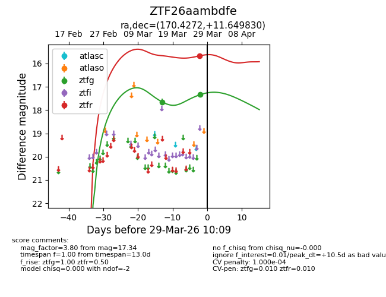
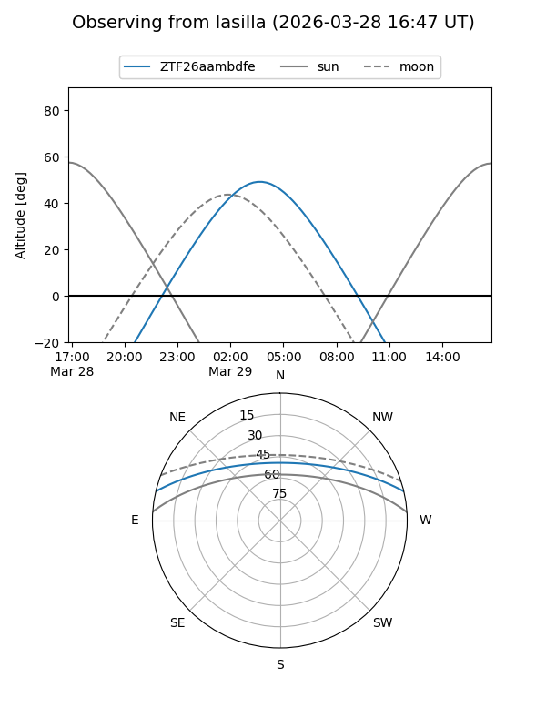
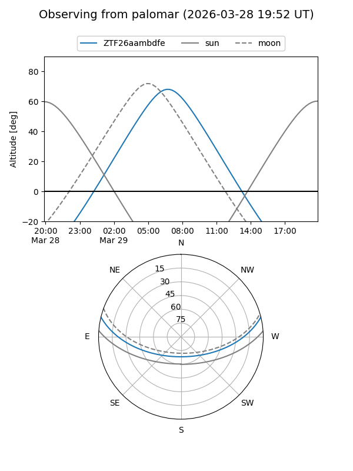
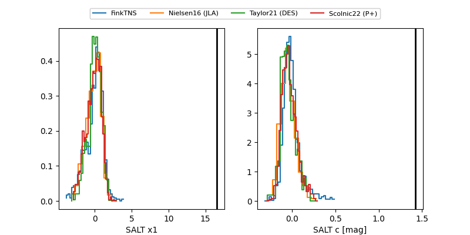

ZTF26aambdfe
Target ZTF26aambdfe at 2026-03-29 10:12
Aliases and brokers:
FINK: link
Lasair: link
ALeRCE: link
alt names
ZTF26aambdfe (ztf,fink_ztf)
Coordinates:
equatorial (ra, dec) = 170.4272,+11.64983
equatorial (HMS+DMS) = 11:21:42.52,+11:38:59.39
galactic (l, b) = (244.8822,+63.86696)
Flags:
likely cv
Photometry:
last ztfg=17.34, ztfr=15.67
2 ztfg, 1 ztfr detections
Lightcurve

Visibility


Additional plots
